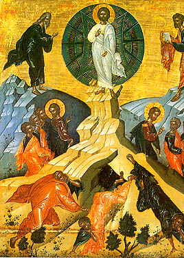

Aug 6/19 2009 Holy Transfiguration
Why were Moses and Elias with Christ on the mountain?

When Christ was transfigured on the mountain, Moses and Elias appeared conversing with Him. Why were these two present, out of all the righteous of the Old Testament?
The service texts explain this.
There are two equally valid answers. One has to do with the respective ministries of the two saints, and the other with a very important difference between them.
The Holy Moses was a prophet, but also, unlike any other personage of the Scripture, the one God chose to communicate the Law to His people (when he brought the Ten Commandments down from the mountain, and subsequently was the mouthpiece of God to proclaim the other laws found in the Pentateuch). He therefore, more than anyone else, is associated with the Law. Te Holy Prophet Elias was one of the greatest prophets. Therefore, Jesus was converging with a representative from the “Law and the Prophets” showing that He is in complete agreement with each.
The Holy Prophet Elias went up to heaven, alive, in the flesh, in a fiery chariot. Therefore, Moses and Elias are also representives of the “living and the dead”, showing that the Jesus is the “Lord of the living and the dead”
Transfigured on the high mountain, / the Savior, having with Him His pre-eminent disciples,/ shone forth most wondrously, / showing them forth as illumined by the loftiness of the virtues / and as ones vouchsafed divine glory. / Moses and Elijah, who spake with Christ, / showed that He hath authority over the living and the dead, / and that He is the God Who of old spake through the law and the prophets. / Of Him was the voice of the Father heard saying from the cloud of light: / "Him do ye obey, / Who through the Cross made hell captive // and granteth life everlasting to the dead!" (Transfiguration Vespers, Lord I have Cried)
Priest Seraphim Holland 2009. St Nicholas Russian Orthodox Church, McKinney, Texas
“Good to Know” is a semi regular posting of some point of doctrine, scriptural exegesis, liturgical topic, or other item which, for an Orthodox Christian, is “good to know”. Some topics will be in questions and answer format. Submissions of topics to the webmaster are encouraged. If we like your submission, we will publish it, and credit you.
This article is at: https://www.orthodox.net//goodtoknow/2009-08.html
https://www.orthodox.net//goodtoknow/2009-08.doc
New “Good to Know” topics, Journal entries, homilies, etc. are on our BLOG: https://www.orthodox.net//redeemingthetime
“Good to Know” Archive: https://www.orthodox.net//goodtoknow
Blog posts & local parish news are posted to our email list. Sometimes “Good to Know” questions are published here in 2 parts, to encourage readers to give their response before seeing the answer. Go to here: http://groups.google.com/group/saint-nicholas-orthodox-church to join.
Redeeming the Time BLOG: https://www.orthodox.net//redeemingthetime
Use this for any edifying reason, but please give credit, and include the URL of the article. This content belongs to the author. We would love to hear from you with comments! (seraphim@orthodox.net)
We confidently recommend our web service provider, Orthodox Internet Services: excellent personal customer service, a fast and reliable server, excellent spam filtering, and an easy to use comprehensive control panel.